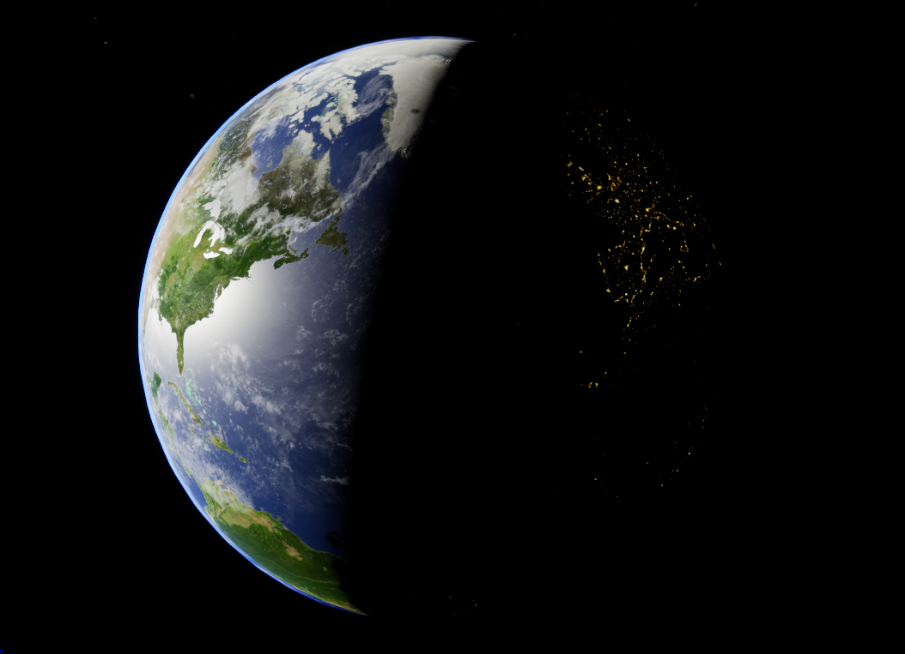
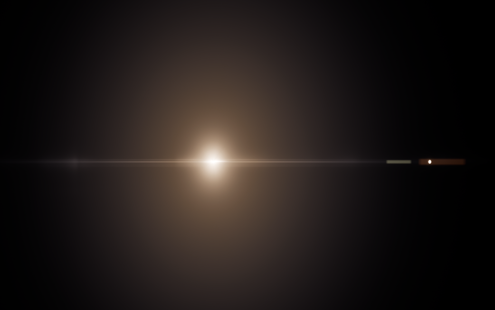
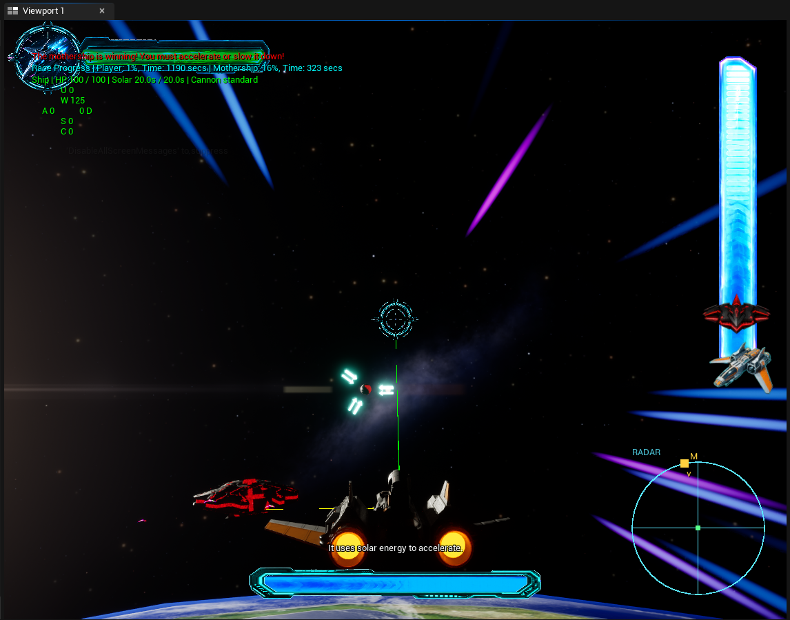

宋岱桉
Daian Song
1. 基于 DirectX 12 开发的第一人称 3D 追逐游戏
1. DirectX 12 Rendering Engine & 3D Chase Game
一款基于 DirectX 12 开发的第一人称 3D 追逐游戏。展示了多个实时渲染技术的综合应用， 包括数据驱动的加载管线、实例化渲染、计算着色器驱动的粒子系统、骨骼动画的淡入淡出效果，以及基于 AABB 的碰撞检测机制。
A first-person 3D chase game developed with DirectX 12, showcasing the integrated application of multiple real-time rendering techniques. The game features a data-driven loading pipeline, instanced rendering (for large-scale grass and trees), a compute-shader-driven particle system, a terrain system, dynamic skeletal animation with cross-fading, and an AABB-based collision detection mechanism.
✨ 核心亮点：基于着色器反射的动态管线
✨ Core Highlight: Shader Reflection-based Dynamic Pipeline
为了解决频繁修改着色器代码带来的繁琐绑定问题，项目实现了在运行时读取并编译着色器源码的功能。通过使用 DirectX 的着色器反射 系统，项目能够自动分析着色器资源需求（如着色器中的 Structured Buffer），实现管线状态对象 (PSO) 与资源的自动化映射与绑定，提升了渲染架构的灵活性与开发效率。
To resolve the tedious binding workflow caused by frequent modifications of shader code, the engine implements dynamic reading and compilation of shader source code at runtime. By deeply integrating the DirectX Shader Reflection system, the engine automatically analyzes shader resource requirements (such as correctly identifying and binding Structured Buffers in vertex and compute shaders) to achieve automated mapping and binding between Pipeline State Objects (PSOs) and resources. This dramatically improves the flexibility and development efficiency of the rendering architecture.

整体场景展示
Overall Scene Showcase

动画系统
Animation System

粒子系统
Particle System
2. 离线路径追踪器
2. Offline Path Tracer
基于物理光线传输原理实现的离线路径追踪渲染器。系统支持微表面材质模型（如导体）及环境光照明，并借助空间加速结构与先进采样算法，实现了复杂室内场景的高效、低噪点渲染。
A renderer that simulates light transport using path tracing. The system supports materials like conductors based on microfacet theory, utilizes a BVH acceleration structure constructed with the Surface Area Heuristic (SAH), and supports environment map importance sampling, greatly enhancing rendering efficiency in complex scenes.
✨ 核心亮点：多重重要性采样、优化的 BVH 加速结构
✨ Core Highlight: Multi-Material Support, MIS (Multiple Importance Sampling), and SAH-built BVH Acceleration Structure
多重重要性采样：针对不同粗糙度材质下直接光源采样与 BSDF 采样方差过大的问题，引入 MIS 技术动态平衡两种策略的权重，显著降低了渲染噪点。
优化的 BVH 加速结构：采用启发式表面积算法指导 BVH 空间分割，最大化射线求交效率，大幅降低了复杂场景下的遍历开销。
To resolve the high-variance noise issues of direct light source sampling and BSDF sampling under different roughness levels, the renderer employs Multiple Importance Sampling (MIS) to balance the weights of both sampling strategies. Additionally, the BVH acceleration structure is partitioned using the Surface Area Heuristic (SAH) algorithm, reducing traversal overhead when rendering complex indoor scenes.

Bathroom 场景
Bathroom Scene

材质展示场景
Material Showcase Scene
3. C++ 2D 类幸存者游戏
3. C++ 2D Survivor-like Game
基于 C++ 与自定义 Canvas 窗口渲染库实现的 2D 类幸存者（Vampire Survivors-like）游戏。系统设计了无限与有物理边界限制的两种地图模式，支持多种具有独特属性的敌人，并拥有基于得分动态触发的属性强化机制以及文本格式的存档读写系统。
A C++ 2D Survivor-like game developed using a custom Canvas rendering library. It features a dual-level mechanic supporting both infinite-wrap and bounded map modes, diverse NPC behaviors (melee and shooter types), dynamic weapon upgrades and AOE damage triggered by player score, a custom text-based save/load system, and integrated real-time performance monitoring.
✨ 核心亮点：快速选择算法筛选 AOE 目标、原位内存回收与视口贴图剔除
✨ Core Highlight: Quickselect-based AOE Targeting, In-place Memory Recycle & Viewport Tile Culling
快速选择的 AOE 目标筛选与原位内存回收：针对 AOE 技能需要快速挑选出当前血量最高怪物的需求，在自定义动态数组中实现了快速选择分区算法，以平均 O(N)
时间复杂度定位前 N 个高血量目标；同时配合双指针原位整理算法，无需重新分配内存即可清除死亡实体并重用插槽，有效规避了频繁申请释放堆内存带来的开销。
无限地图渲染与视口贴图剔除：地图系统支持无限地图模式。渲染系统利用相机坐标动态计算当前屏幕上可见的 Tiles
行列区间，只遍历绘制视口范围内的贴图块，保持高帧率运行。
To efficiently target high-health enemies for player AOE attacks, a Quickselect partitioning algorithm is implemented within the custom `GrowableArray`, filtering the top-N targets in expected average O(N) time complexity. This is integrated with a two-pointer in-place filtering mechanism (`removeInactive`) that cleans up dead entities and reuses memory slots without triggering reallocations. Furthermore, the map renderer dynamically calculates the visible tile range using camera coordinates, culling off-screen drawing calls to maintain high frame rates in both seamless infinite wrapping and bounded level boundary modes.
4. Unreal Engine 5 空间环境与特效系统
4. Unreal Engine 5 Space Environment & VFX System
为 Unreal Engine 5 太空竞速游戏《Skyfire》第七关设计并实现的高逼真度空间环境与视觉特效系统。系统包含多层地球天体模型、高对比度真空照明系统、镜头光晕（Lens Flare）效果，以及基于 Niagara 粒子系统的速度感流线特效。
A high-fidelity space environment and visual effects system developed for Level 7 of the Unreal Engine 5 space racing game *Skyfire*. The system features a multi-layered planetary Earth model, high-contrast vacuum lighting, screen-space lens flares, and a Niagara-based velocity speed lines system for optical flow feedback.
✨ 核心亮点：多层地球大气散射、真空光照与镜头光晕、Niagara 速度线
✨ Core Highlight: Multi-layered Earth Atmospheric Scattering, Vacuum Lighting & Lens Flare, Niagara Speed Lines
多层地球天体与大气散射：由地表、大气和云层多层结构组成。利用 Fresnel 公式计算边缘 volumetric 厚度来逼近真实的大气散射，并使用太阳光照方向进行遮罩，保证了 terminator（晨昏线）的平滑过渡；云层采用 Panner 动态平移实现缓慢漂移效果。
真空光照与镜头光晕（Lens Flare）：模拟无 Rayleigh 散射的真空环境，配置极小光源角以呈现硬阴影，剔除 Sky Light 等散射光源；利用屏幕空间坐标偏移向量计算 Ghosting 轨迹，结合垂直 UV 余弦幂次公式实现了主光斑及高频衍射光栅。
Niagara 速度感视觉反馈：为了在空旷太空中提供速度感知，在相机周围以环形/圆盘状（Ring/Disc）产生 Niagara 粒子，并在粒子运动方向上根据飞船当前速度动态拉伸材质（Sprite Alignment），实现流线型速度线特效。
Multi-layered Earth & Atmospheric Scattering: Features realistic surface, atmosphere, and cloud layers. Utilizes the Fresnel equation to approximate volumetric gas thickness near the planetary edge, masked by a Lambertian term to smoothly transition light across the terminator.
Vacuum Lighting & Screen-space Lens Flare: Replicates high-contrast space environments using a sharp Directional Light with zero ambient sky light. Procedurally generates screen-space lens flares, calculating ghosting offsets along screen-center vectors and streak diffraction using cosine-power functions.
Niagara Velocity Visualization: Spawns ring-distributed Niagara particles around the player's camera to establish optical flow in vacuum space. Dynamically aligns and scales particles along their velocity vector, translating dots into speed streaks at higher velocities.

地球与大气层模型
Earth & Atmosphere Model

镜头光晕与鬼影效果
Lens Flare & Ghosting Effects

Niagara 速度感粒子线系统
Niagara Velocity Speed Lines System
5. 基于 PBD 与 XPBD 的高性能布料模拟引擎
5. High-Performance Cloth Simulation Engine based on PBD & XPBD
一款基于 PBD 及扩展版本 XPBD 的实时布料模拟系统。与传统的力学求解器（如隐式欧拉方法）相比，PBD 通过直接在位置层面迭代求解几何约束，确保了模拟过程的无条件稳定性，消除了由于大步长导致的系统崩溃问题。
Developed a real-time cloth simulation system based on Position Based Dynamics (PBD) and its extended version (Extended PBD, XPBD). Compared with traditional mechanical solvers (like Implicit Euler), PBD guarantees unconditional stability during simulation by directly resolving geometric constraints on the position level, avoiding system explosions caused by large time steps.
✨ 核心亮点：XPBD 柔顺度控制
✨ Core Highlight: XPBD Compliance Control
项目中引入 XPBD 算法，通过将物理刚度转化为柔顺度并引入拉格朗日乘子，实现了刚度与迭代次数的完全解耦。
In traditional PBD, material stiffness is tightly coupled with the number of iterations and time steps, rendering physical parameter tuning difficult. This project introduces the XPBD algorithm, which converts physical stiffness into compliance and introduces Lagrange multipliers, achieving complete decoupling of stiffness from the iteration count.
6. 软件光栅化器加速
6. Software Rasterizer Acceleration
针对现代多核 CPU 进行深度优化的软件光栅化器。通过引入 AVX2 SIMD 指令集、数据结构重构 (SoA)以及基于工作窃取 (Work-Stealing) 算法 of Tile-based 多线程渲染架构，大幅突破了内存带宽和同步开销的瓶颈。
A software rasterizer deeply optimized for modern multi-core CPUs. By incorporating the AVX2 SIMD instruction set, Structure of Arrays (SoA) layout restructuring, and a tile-based multi-threaded rendering architecture driven by a work-stealing algorithm, it successfully breaks through memory bandwidth and synchronization overhead bottlenecks.
✨ 核心亮点：AVX2 向量化极限加速
✨ Core Highlight: AVX2 Vectorization Extreme Speedup
光栅化的最大瓶颈在于逐像素的重心坐标计算和着色。通过将帧缓冲区数据格式对齐为 32-bit 的 RGBA，我利用 256-bit 的 AVX2 寄存器在单条指令中同时处理并写入 8 个像素的边缘函数与深度测试。
The primary bottleneck of rasterization lies in per-pixel barycentric coordinate calculation and shading. By aligning the frame buffer data format to 32-bit RGBA, I leverage 256-bit AVX2 registers to compute and write the edge functions and depth tests of 8 pixels simultaneously in a single instruction.
轻量级场景下，向量化计算带来的指令级并行收益。
Instruction-level parallelism gains from vectorized computation in lightweight scenes.